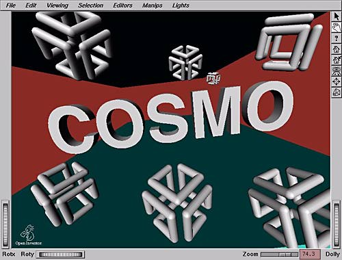
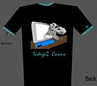
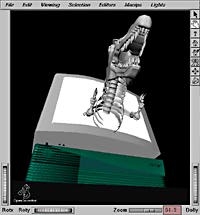
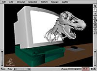

 (Stereogram jpeg ~403kb)
{kind=link}
History
I was approached by Ted Marsh of the Cosmo engineering team to do a T-shirt commemorating the release of the product. The idea was to portray Cosmo's role in bringing real-time video compression to the Indigo2 platform specifically. It would also be "nice" to maintain some sorta relevance to the namesake as well as being a "cool-looking" design.
{kind=link}
As a personal challenge, I thought of making SGI's first ever product t-shirt to use a SIRDS (Stereo Image Random Dot Stereogram)as the graphic image. The hard part was choosing subjects that would be relevant to the Cosmo product, while maintaining its form well enough after being "sirdized."
Another criteria was to achieve a maximum sense of depth if possible, showing off the amazing 3D illusion that this latest fad can generate. The following image shows the prototype SIRDS of the SGI logo. Notice that you could actually see the SGI logo in 3D if you defocus your eyes. If you're not a SNERD, use the "cheater" red dots at the top of the image to help ya.
{kind=link}
{kind=link}
Before settling on the more conservative SIRDS image of the Cosmo and SGI logos, I opted for a more jurassic idea. I wanted to have a T-rex charging out of an SGI workstation monitor. The motto would've been something corny like, "Cosmo... bringing out the monster in your system!" This idea was scrapped due to the polygonal complexity of the T-rex model. It did not reproduce well as a SIRDS image. But here is a non-sirdized image showing what it might have looked like....
  
{kind=link}
{kind=link}
The final rendering of the front image was done entirely within IRIS Showcase, utilizing Inventor's interactive 3D along with its swank texture editor. Alpha channel was then added to the image using "brute force" (Haeberli Tools).
The image on the rear monitor is called, "Indigo Girl," which was created for a CSD Pipeline magazine cover. Similarly, the whole 3D scene was also recycled from another previous cover art for a Pipeline article on SGI Video Options.
{kind=link}
The bummer thing is that this t-shirt was never made. I guess SGI's first ever SIRDS t-shirt will just have to wait.